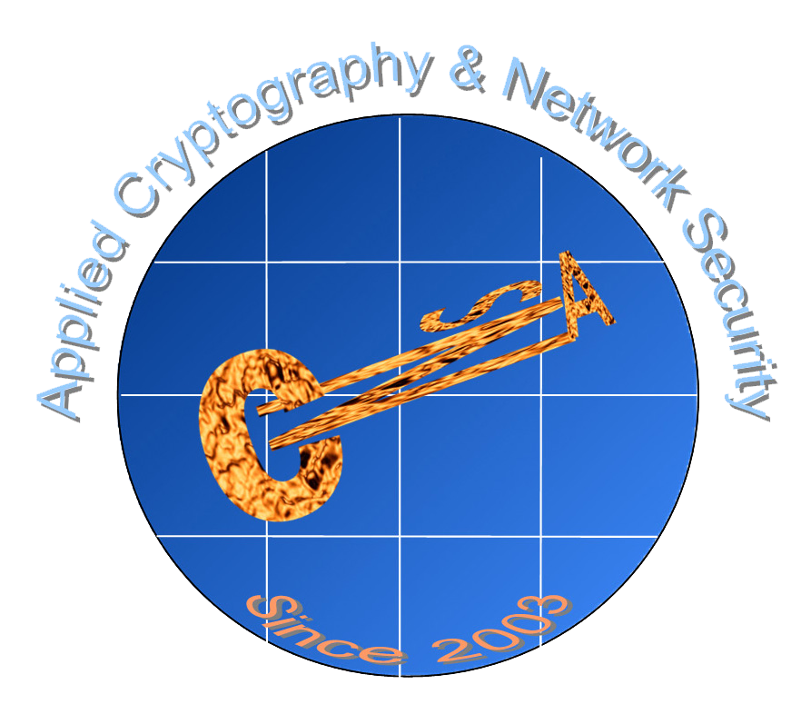

ACNS’20 and all its co-located workshops will go virtual.
SCI Workshop Program
Oct 21, 2020
Session 1: Keynote
3:00pm CEST time in Rome Italy, equivalent to 9:00am Eastern Time in the US, or 9:00pm Beijing time
Cache-in-the-Middle (CITM) Attacks: Manipulating Sensitive Data in Isolated Execution Environments
Dr. Kun Sun from George Mason University, USA
Session 2: Research Papers I
4:00pm CEST time (Rome), 10:00am EDT (US), or 10:00pm Beijing
On New Zero-Knowledge Proofs for Full-Anonymous Lattice-Based Group Signature Scheme with Verifier-Local Revocation
Yanhua Zhang, Ximeng Liu, Yifeng Yin, Qikun Zhang, and Huiwen Jia
Proofs of Ownership on Encrypted Cloud Data via Intel SGX
Weijing You, and Bo Chen
Session 3: Research Papers II
5:00pm CEST time (Rome), 11:00am EDT (US), or 11:00pm Beijing
On the Verification of Signed Messages
Bowen Xu, Xin Xu, Quanwei Cai, Wei Wang, and Qiongxiao Wang
Applications and Developments of the Lattice Attack in Side Channel Attacks
Ziqiang Ma, Bingyu Li, Quanwei Cai, and Jun Yang
Exploring the Security of Certificate Transparency in the Wild
Bingyu Li, Fengjun Li, Ziqiang Ma, and Qianhong Wu
SCI Workshop Call for Papers
In recent years, we have witnessed severe security incidences caused by buggy implementations of cryptographic algorithms: POODLE, DROWN, OpenSSL Heartbleed, etc. It is critical for practitioners and researchers to ensure the security of cryptographic hardware and software, which are essential for a wide range of systems, services and applications.
The aim of the workshop is to provide an international forum of scientific research and development to explore the security issues in the implementation and deployment of cryptographic algorithms. We are interested in these main aspects: (1) vulnerabilities and defenses in the implementation of cryptographic algorithms; (2) vulnerabilities and defenses in the implementation of cryptographic protocols; (3) defective cryptographic algorithms and protocols deployed in the wild; (3) weak cryptographic keys and random numbers in the cryptographic implementation; (4) runtime cryptographic key attacks and protections; (5) fraudulent certificates and key management; and (6) other topics on secure cryptographic implementations. We solicitate submissions of original research papers on a wide range of topics, including but not limited to:
- Secure implementations of crypto algorithms & protocols
- Vulnerable implementations in the wild
- Weak cryptographic keys
- Cryptographic key attacks and defense
- Side Channels
- Cryptographic Hardware
- Physical attacks and defense
- Cryptography for Blockchain
- Cryptography for IoT/CPS
- Cryptography for the Cloud
- Verification and evaluation tools
We are especially interested in papers with novel ideas, position papers, pilot studies and initial findings. ACNS will also award best papers from all accepted workshop papers. Meanwhile, the workshop will include an interesting keynote talk, which will be announced on the workshop web site as arrangements are finalized.
Prospective authors are invited to submit manuscript describing original work. The manuscript has to be written in English and in PDF format. All submissions must follow the original LNCS format (see http://www.springeronline.com/lncs) with a page limit of 18 pages. The proceedings of the SCI workshop will be published by Springer in the LNCS series.
Submit your papers: https://easychair.org/conferences/?conf=acnssci2020
Program Committee
- Bo Chen Michigan Technological Univ.
- Fu Chen Central Univ. of Finance & Economics
- Junfeng Fan Open Security Research, Inc.,
- Johann Großschädl University of Luxembourg
- Le Guan University of Georgia
- Debiao He Wuhan University
- Linzhi Jiang University of Surrey
- Fengjun Li University of Kansas
- Xiao Liu Facebook Inc.
- Zhe Liu Nanjing Univ. of Aeronautics & Astronautics
- Yuan Ma Chinese Academy of Sciences
- Jun Shao Zhejiang Gongshang University
- Ruisheng Shi Beijing University of Posts and Telecommunications
- Juan Wang Wuhan University
- Jun Xu Stevens Institute of Technology
- Li Yang Xidian University
- Fan Zhang Zhejiang University
- Fangyu Zheng Chinese Academy of Sciences
In Conjunction with
ACNS 2020
Virtual Workshop
Imagine yourself in Rome
October 21, 2020
Key dates:
Paper submission:
Extended to July 10th
23:59, AoE
Notification:
Aug 5 , 2020
Aug 19, 2020
Workshop Chairs:
Dr. Jingqiang Lin
Chinese Academy of Sciences
linjingqiang <at> iie.ac.cn
Dr. Bo Luo
University of Kansas
bluo <at> ku.edu
Publication Chair
Jun Shao
Zhejiang Gongshang University
Publicity Co-chairs:
Le Guan
University of Georgia
Debiao He
Wuhan University
Web Chair:
Dr. Yuan Ma
Chinese Academy of Sciences
